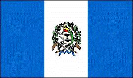
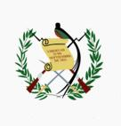

Guatemala
|  |  |
Letra del himno nacionalhimno_30.
Información general
Nombre oficial: República de Guatemala
Área: 108 889 km²
Costas: 400 km
División política: 22 Departamentos
Departamento Cabecera
- Alta Verapaz Cobán
- Baja Verapaz Salamá
- Chimaltenango Chimaltenango
- Chiquimula Chiquimula
- Escuintla Escuintla
- El Progreso Guastatoya
- Guatemala Guatemala
- Huehuetenango Huehuetenango
- Izabal Puerto Barrios
- Jalapa Jalapa
- Jutiapa Jutiapa
- El Petén Flores
- Quetzaltenango Quetzaltenango
- El Quiché Santa Cruz del Quiché
- Retalhuleu Retalhuleu
- Sacatepéquez Antigua Guatemala
- San Marcos San Marcos
- Santa Rosa Culiapa
- Sololá Sololá
- Suchitepéquez Mazatenango
- Totonicapán Totonicapán
- Zacapa Zacapa
Unidad monetaria: Quetzal
1 Quetzal = 100 centavos
Idiomas: Español (oficial); veintiuna lenguas mayas (entre ellas akateko, kaqchikel, kiiché, mam), xinka y garífuna.
Fiesta nacional: 15 de septiembre, Día de la Independencia
Gentilicio: Guatemalteco
Hora oficial: GMT -6 horas (normal), -5 (verano)
Miembro de: ONU, OEA, MCCA
Curiosidades
Guatemala es básicamente montañosa pero al norte se encuentra el Petén , una zona selvática abundante en maderas preciosas.
Guatemala tiene numerosos volcanes, el más elevado es el Tajamulco con 4 210 m.
Información adicional en Internet.
Perfil Ecónomico
Perfil Demográfico
Población: 11.237.196 hab.
Densidad de población: 103 hab/km²
Fuente INE http://www.ine.gob.gt/
Perfil Cultural
Religión:
- Católicos: 91,9%
- Protestantes: 6,2%
- No religiosos: 1,6%
- Otros: 0,3%
Sistema de Gobierno
Constitución vigente: 1993
Sistema ejecutivo: Presidente y Vicepresidente, elegidos directamente para un término de cuatro años, no reelegibles. El Presidente es asesorado por el Consejo de Ministros.
Sistema legislativo: Congreso unicameral (ochenta diputados elegidos por sufragio directo, sesenta y cuatro por distritos electorales y el resto por lista nacional, con un término también de cuatro años).
Sistema judicial: Corte Suprema de Justicia (por lo menos siete magistrados, elegidos por el Congreso para un período de cuatro años; nombra a los jueces de los tribunales inferiores). Existen la Corte de Constitucionalidad y el Tribunal Supremo Electoral.
Gobierno
subdivisional: El país
está dividido en
veintidós departamentos (cada uno con un Gobernador nombrado
por el Presidente) y municipios.
Algunas figuras notables:
- Rafael Arévalo Martínez (1884). Poeta y novelista
- Miguel Angel Asturias (1899-1974). Novelista. Premio Nobel de Literatura 1967.
- José Batres y Montúfar (1809-1844). Poeta y escritor
- Luis Cardoza Aragón (1904). Poeta, escritor y periodista
- Enrique Gómez Carrillo (1873-1927). Novelista y ensayista
- Rafael Landívar (1731-1793). Poeta
- José Milla (1822-1882). Poeta, historiador y novelista
- Alonso de la Paz (1605-1676). Escultor
- Rigoberta Menchu Tum. Premio Nobel de la Paz 1992.
Lugares declarados patrimonio mundial por la UNESCO
- Antigua Guatemala.
- Quiriguá (Parque Arqueológico y ruinas).
- Tikal (Parque Nacional).
Aproximación histórica
Guatemala limita con México por el norte y el oeste, con Belice y el Mar de las Antillas por el este y con Honduras y el Salvador por el sudeste.
La civilización maya floreció en los territorios que hoy ocupan Guatemala, Honduras y el sudeste de México. Los mayas alcanzaron un gran desarrollo en su primera época de apogeo en la parte norte de Guatemala. Dos de las ciudades mayas más importantes, Tikal y Uacaxtún, se redescubrieron en la zona de El Petén, en Guatemala. En 1960 se descubrió la Gran Plaza de Tikal que por el número de sus monumentos es la más conocida de las ciudades mayas. En Tikal se conservan cinco templos, en forma de pirámide. En Uacaxtún existe un monumento funerario que se considera el más antiguo de la región. Los mayas se destacaron en artes, ciencias, astronomía y matemáticas. Empleaban un sistema de numeración basado en el número 20 en lugar de nuestro sistema decimal actual de base 10 y conocían el numero 0.
No se conoce con exactitud el motivo de la decadencia de la civilización maya; el agotamiento de las tierras cultivables, epidemias, o un cambio de clima pudo haber llevado a los mayas a abandonar los florecientes centros de su imperio. A la llegada de los españoles sobrevivían los quichés, con una cultura avanzada y una escritura jeroglífica que fue substituida después de la conquista por una alfabética, gracias a lo cual han llegado a nosotros importantes escritos como el Popol Vuh.
Guatemala fue conquistada en el siglo XVI por los españoles. Se independizó en 1821, como parte de México, dentro del imperio de Iturbide. En 1823 forma parte de las Provincias Unidas de Centro América. Al desintegrarse esta Federación en 1833, surge Guatemala como estado independiente.
Su relieve presenta vastas zonas llanas al norte y el este, con cordones montañosos en la región occidental, con más de 30 volcanes identificados. La economía es fundamentalmente agrícola exportando café, azúcar, bananos y algodón.
«-- ir al comienzo
«-- regresar